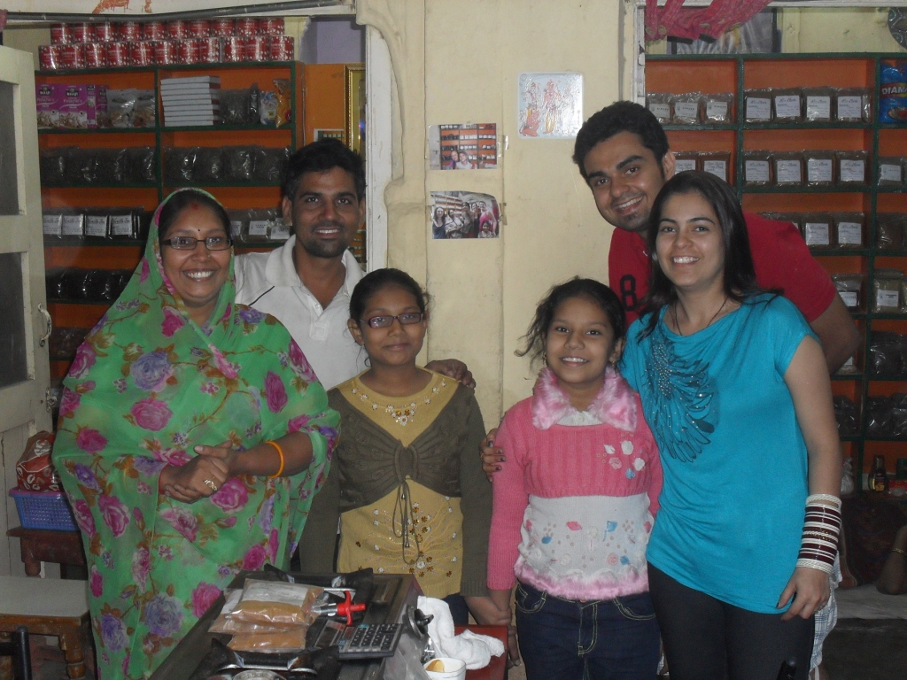

About Us

A few years my husband Anil was running a little grocery shop in his family’s 200 year old house close to the Clock Tower in the Old City of Jodhpur in Rajasthan in Northern India. Anil had been mixing spices since he was 13 years old and he decided to start selling little packets of spice in the shop. Business was slow and times were tough for us as we had two young daughters.
Because we were so close to the clock Tower, tourists would often come into the shop looking for a bottle of water and a kind word, tired of shopkeepers constantly trying to sell them something.
One day my little daughter crawled out of the shop and when I went outside to bring her back I saw a man drinking water and staring at the spices on our shelves. I could see that he wanted to ask me something. I invited him into my kitchen for a chai and taught him to how to make it as well. He bought 10 bags of spices. I realized then that people will buy spices if they know how to use them.
A few weeks later an Italian tourist came into the shop and I invited him into the kitchen for a cup of chai. He told me that he would like to buy some spices but he didn’t know how to cook with them. So I gave him a cooking lesson on the spot and it ended up lasting for 5 hours. He asked me how much he owed me for the cooking lesson and bought all our packets of spices. That’s where it all started.
Very slowly we began inviting tourists into our home and teaching them how to cook Indian food. It grew from there. The big breakthrough came when a kind person put a review on TripAdvisor. Since then the business has grown fast.
I teach the tourists, and Anil who is an expert cook, runs cooking classes for Indian people as well as attending to the spice business. Spice Paradise is a true partnership between husband and wife.